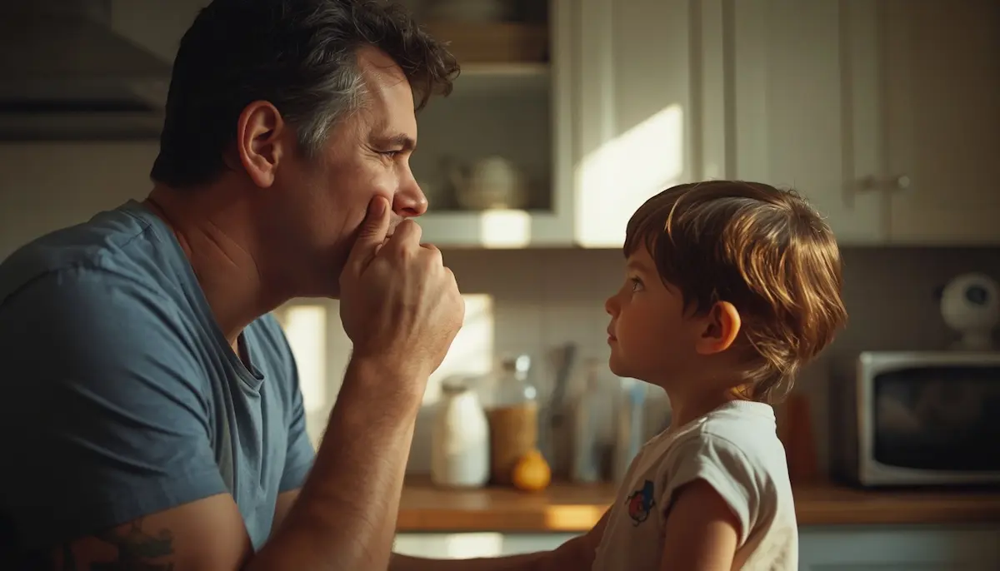

Facilitar la comunicación en casa ante el TDL
El hogar constituye el espacio principal donde el niño o niña con Trastorno del Desarrollo del Lenguaje (TDL) experimenta sus interacciones cotidianas de forma más natural. Lejos de requerir métodos complejos, transformar el entorno doméstico en un espacio facilitador depende de pequeños ajustes en nuestra forma de hablar, escuchar y organizar el tiempo, reduciendo la presión expresiva y fomentando la confianza.
Estrategias cotidianas para enriquecer el diálogo familiar
Cuando la comprensión o la expresión verbal exigen un esfuerzo adicional, resulta muy útil adaptar nuestra comunicación directa. Hablar de forma pausada, mantener el contacto visual sin prisas y evitar interrumpir sus intentos de explicarse permite que el menor sienta que su mensaje es valioso y que cuenta con todo el tiempo necesario.
"Facilitar la comunicación en casa no significa hablar por él, sino construir un puente de paciencia donde sus palabras encuentren el espacio seguro para nacer."
Herramientas prácticas para el día a día en el hogar
Implementar pautas sencillas en las rutinas domésticas ayuda a desvanecer la frustración y mejora el entendimiento mutuo:
1. Simplificar y estructurar las consignas: Dividir las instrucciones cotidianas en pasos cortos y directos evita la saturación del procesamiento auditivo, facilitando que el menor pueda cumplirlas con éxito.
2. Incorporar apoyos visuales de apoyo: Utilizar gestos naturales, pictogramas o pequeñas agendas visuales complementa la información verbal, reforzando la comprensión de lo que se espera en cada momento.
Creciendo en un entorno de escucha paciente
Con un ambiente doméstico adaptado y exento de prisas, el niño experimenta la seguridad necesaria para expresarse sin temor a equivocarse. Cuidar la comunicación diaria fortalece el vínculo familiar y llena el hogar de complicidad y confianza mutua.
➔ Volver al índice de Trastorno del Desarrollo del Lenguaje